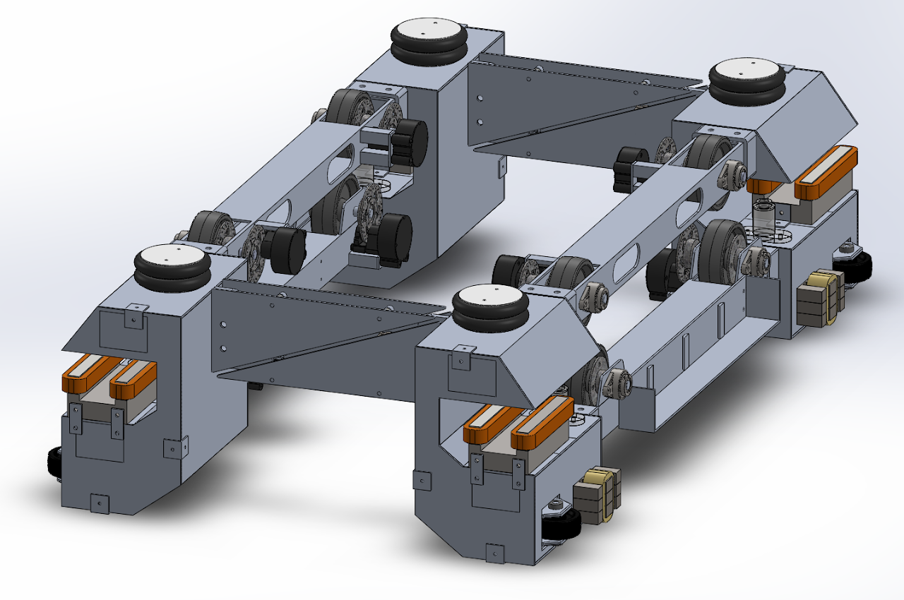
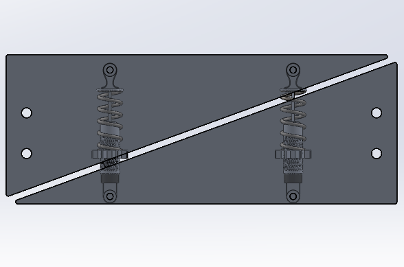
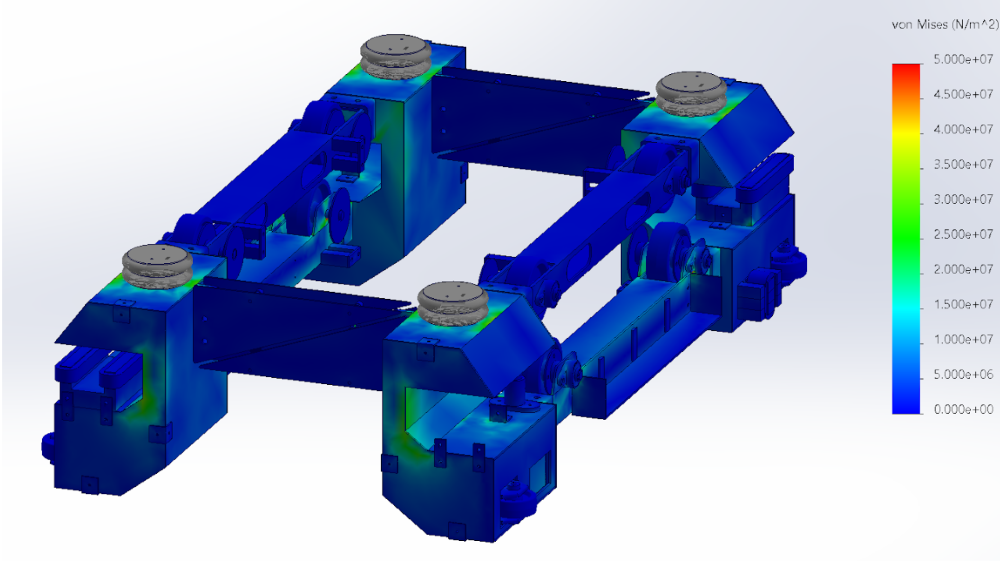
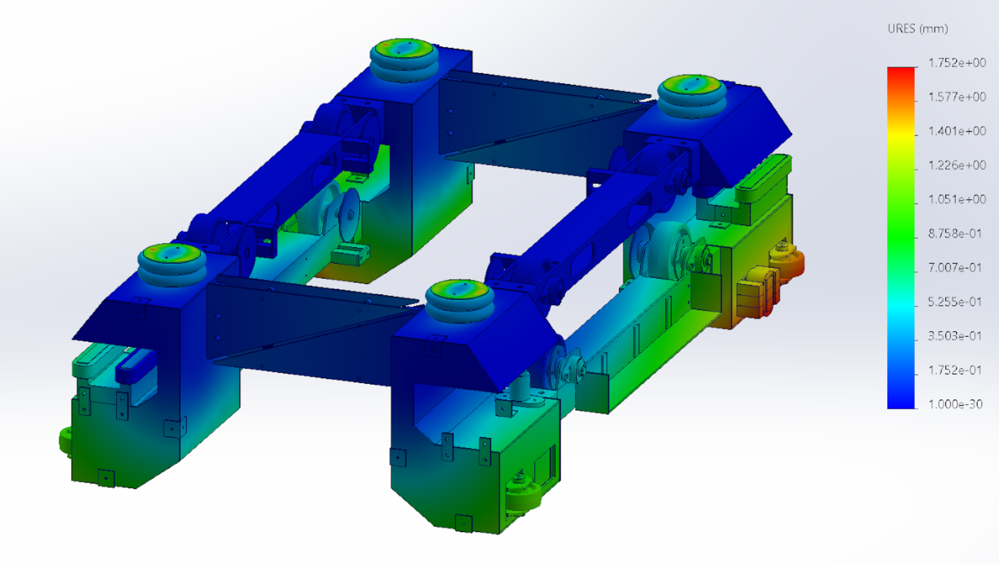

Texas Guadaloop - Vehicle Dynamics Lead
As the lead of dynamic systems at Texas Guadaloop, I oversee the development of mechanical methods to ensure the pod's safety and stability during nominal operation and in failure cases. There are two key systems which I manage the design and manufacture of: a mechanical suspension chassis (known as a bogie) and an emergency pneumatic braking system.
This page showcases highlights of my work on the bogie design. For details on the pneumatic braking system, see the Braking Systems Engineer page.
This design features two complementary suspension modes: electromagnetic levitation units (known as yokes) and shock absorbers integrated into the triangular transverse bars (anti-roll bars).
The yokes utilize electromagnetic attractive forces to lift and stabilize the pod at a fixed heave point. The shock absorbers prevent modules from rolling about their surge axis and dissipate energy throughout the entire bogie structure.

Complete SolidWorks CAD assembly of the maglev pod bogie.
Unlike conventional trains and vehicles which use torsion springs, maglev systems cannot employ traditional anti-roll mechanisms because there are no rotating bodies in contact with the track during nominal operations.
Instead, these anti-roll bars utilize spring-loaded shock absorbers to generate reaction forces against roll displacements and restore the bogie to stable equilibrium.

Anti-roll bar with integrated shock absorber suspension design.
FEA stress analysis was performed to validate bogie performance under nominal operating conditions. This analysis confirms structural integrity and identifies regions of peak stress for design optimization.

Von Mises stress distribution under nominal operating loads.
Displacement analysis shows how the bogie structure deforms under sustained load, validating the shock absorber performance and confirming the stability margins of the suspension system.

Total displacement contour plot under nominal operating conditions.
In failure scenarios, it is critical to analyze stresses and displacements to ensure minimal damage and rapid recovery to nominal operation. This analysis was performed using ANSYS Transient Structural Finite Element Analysis.
Due to limitations on the student version of ANSYS (maximum node count), full bogie analysis was performed in SolidWorks simulation, while detailed subsystem studies used ANSYS.
Transient response of the top module beam to impulse loading.
I authored this technical document as the principal engineer to outline the complete design and analysis of the maglev bogie suspension system. This represented a significant advancement over previous years' designs.
The document provides detailed coverage of the principal dynamics and kinematics governing the system, as well as integration requirements with other subsystems including the frame, track, and electronics.